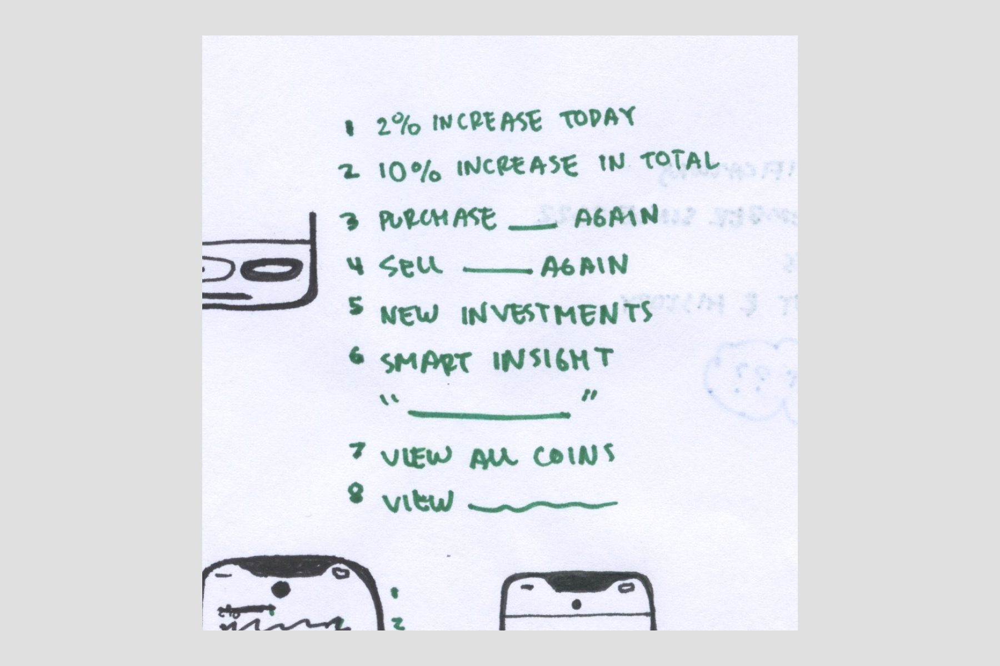

Design for your ears
January 2026 — Try closing your eyes to make a better, accessible design. Write your design as a script from left to right, top to bottom.
Every time I design a user interface, I get a piece of paper and write it out sequentially like a tv script.
When I read my design aloud from left to right, top to bottom, how should it sound? How long should it take to get to the good stuff? What should be read first, and what can wait?
I call it “designing for my ears”. I originally started doing this to make sure whatever I designed made sense for a screen reader user (more on that in a second).
I also realized, as a sighted person, I typically scan in a layer cake method from left to right, top to bottom. I feel like I even speak in my head sometimes.
Designing for your ears pushes you to get clear about what your screen should prioritize. And I think this is key to aesthetic, understandable, honest design.
By writing out your design, you’re also defining reading order, which is essentially the screen reader and keyboard navigation experience. You may also improve cognitive accessibility by eliminating distractions that are oh so tempting to drop into a visual design for needless extra “pop”.
After you’ve done this a few times, you’ll run into the meanest accessibility problems that absolutely need your discernment as a designer to solve. You’re at Accessibility 301. Here are my best tips:
- Navigation is most important. Your user needs to know where they are before they can comfortably engage. A back button, for example, should be read aloud first on a screen.
- You can specify an element to be visually out of order; for example, a back button at the bottom of a screen. Just flag it for your engineer.
- Draw arrows on your design if your reading order isn’t obvious. It’s quick and very easy for an engineer to understand.
- Label your icon buttons. Always.
- Point out your problems. If your script is getting weird but you can’t solve it for one reason or another, at the very least, point it out to your engineer. They may know something to unblock you. Accessibility is sometimes very challenging, but it’s better not to sweep a problem under the rug.
- Turn on VoiceOver and test other apps for script inspiration. (But don’t trust they have it figured out better than you!). You can even screen record things you like and add them to your engineering handoff. It may give your engineer the hint they need to code something better.
I promise designing for your ears is as good a general design practice as it is an accessibility technique. I recently shared this tip with an executive without mentioning accessibility at all. He was stoked and immediately pointed out an odd design decision he didn’t like, which, yes, happened to be woefully inaccessible for screen reader users.
Good luck, thank you for reading, and please tell me how designing for your ears works for you.